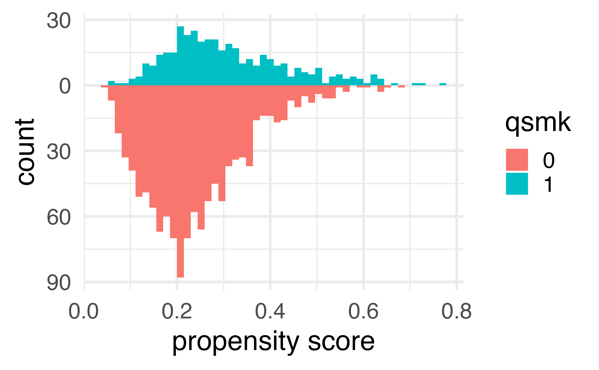
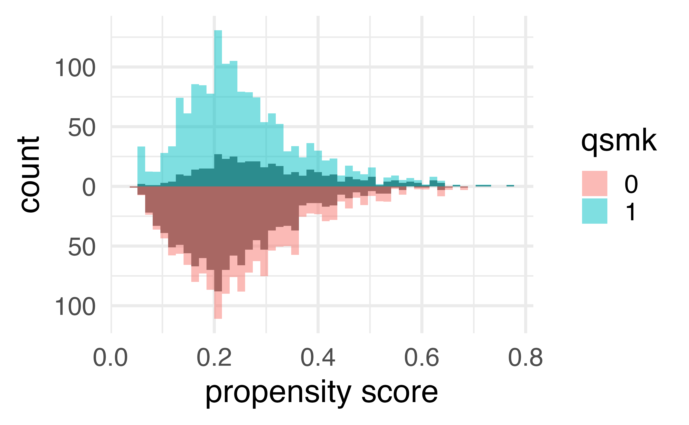

# A tibble: 1,566 × 67
seqn qsmk death yrdth modth dadth sbp dbp sex
<dbl> <dbl> <dbl> <dbl> <dbl> <dbl> <dbl> <dbl> <fct>
1 233 0 0 NA NA NA 175 96 0
2 235 0 0 NA NA NA 123 80 0
3 244 0 0 NA NA NA 115 75 1
4 245 0 1 85 2 14 148 78 0
5 252 0 0 NA NA NA 118 77 0
6 257 0 0 NA NA NA 141 83 1
7 262 0 0 NA NA NA 132 69 1
8 266 0 0 NA NA NA 100 53 1
9 419 0 1 84 10 13 163 79 0
10 420 0 1 86 10 17 184 106 0
# ℹ 1,556 more rows
# ℹ 58 more variables: age <dbl>, race <fct>, income <dbl>,
# marital <dbl>, school <dbl>, education <fct>, …Causal Modeling in R: Whole Game
Malcolm Barrett
2021-09-01
- Specify causal question (e.g. target trial)
- Draw assumptions (causal diagram)
- Model assumptions (e.g. propensity score)
- Analyze propensities (diagnostics)
- Estimate causal effects (e.g. IPW)
- Sensitivity analysis (more later!)
We’ll focus on the broader ideas behind each step and what they look like all together; we don’t expect you to fully digest each idea. We’ll spend the rest of the workshop taking up each step in detail
Do people who quit smoking gain weight?
Did those who quit smoking gain weight?

Did those who quit smoking gain weight?
draw your assumptions

What do I need to control for?

Multivariable regression: what’s the association?
# A tibble: 1 × 7
term estimate std.error statistic p.value conf.low
<chr> <dbl> <dbl> <dbl> <dbl> <dbl>
1 qsmk 3.46 0.438 7.90 5.36e-15 2.60
# ℹ 1 more variable: conf.high <dbl>model your assumptions
counterfactual: what if everyone quit smoking vs. what if no one quit smoking
Fit propensity score model
Calculate inverse probability weights
diagnose your model assumptions
What’s the distribution of weights?
What are the weights doing to the sample?
What are the weights doing to the sample?


estimate the causal effects
Estimate causal effect with IPW
Estimate causal effect with IPW
Let’s fix our confidence intervals with robust SEs!
Let’s fix our confidence intervals with robust SEs!
Let’s fix our confidence intervals with the bootstrap!
fit_ipw <- function(split, ...) {
.df <- analysis(split)
# fit propensity score model
propensity_model <- glm(
qsmk ~ sex +
race + age + I(age^2) + education +
smokeintensity + I(smokeintensity^2) +
smokeyrs + I(smokeyrs^2) + exercise + active +
wt71 + I(wt71^2),
family = binomial(),
data = .df
)
# calculate inverse probability weights
.df <- propensity_model |>
augment(type.predict = "response", data = .df) |>
mutate(wts = wt_ate(.fitted, qsmk))
# fit correctly bootstrapped ipw model
lm(wt82_71 ~ qsmk, data = .df, weights = wts) |>
tidy()
}Using {rsample} to bootstrap our causal effect
Using {rsample} to bootstrap our causal effect
Using {rsample} to bootstrap our causal effect
# A tibble: 1 × 6
term .lower .estimate .upper .alpha .method
<chr> <dbl> <dbl> <dbl> <dbl> <chr>
1 qsmk 2.46 3.45 4.40 0.05 student-t